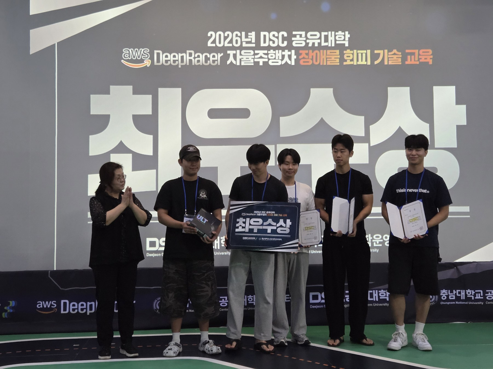

2026 DSC 자율주행차 장애물 회피 기술 교육
이 프로젝트가 채우는 로드맵 칸:
learning→ Research Direction
강화학습 기반 자율주행 — 보상함수(reward function) 설계와 반복 개선이 핵심.
결과 — 최우수상
2026 DSC 공유대학 AWS DeepRacer 자율주행차 장애물 회피 기술 교육 — 최우수상
발표 시점(7/31)에는 실차 완주 영상이 없어 20.9초짜리 미완주 영상으로 발표했고, 이후 완주 영상(58.3초)을 촬영해 2026-09-04에 발표자료 슬라이드 10을 교체했다.

실차 완주 주행 → 실물 차량 주행
보상함수 설계 — 11번의 반복
이 프로젝트에서 제일 값진 자료. 버전이 전부 남아있음.
1단계 step1_demo.py → ver1 → ver2 → ver3
2단계 step2_demo.py → ver1 → ver2
3단계 step3_demo.py → ver1 → ver2 → ver3
└→ Final_ver.py
왜 이게 중요한가: 결과 코드 하나만 있으면 “됐다”밖에 말할 게 없다. 버전이 다 남아있으면 “ver1은 이래서 실패했고 ver2에서 이걸 바꿨다”를 말할 수 있다. 면접에서 물어보는 건 후자다.
경로 최적화
최적화 경로/트랙 최적화 파일.py최적화 경로/racing_line_summary.txt최적화 경로/보수적인 곡선/— 1단계 보상함수를 보수적인 곡선에 적용한 변형
학습 모델
traj_opt_ver3 ~ ver10 best 모델 (각 21MB, .tar.gz).
용량 문제로 볼트에 미복사 — 원본은 C:\Archive\2026 DSC 자율주행차 장애물 회피 기술 교육\학습모델\
자료
- 2026-07-31 교육 발표 — 최종 발표 PPT를 페이지 순서대로 옮긴 노트 (12p, 이미지 18 + 영상 1)
2026 자율주행차 장애물 회피교육.pptx(35MB, 원본 위치 보존) — 2026-09-04 슬라이드 10 교체판사진, 동영상/— 실차 주행 사진·영상.최종본 동영상.mp4(완주, 58.3초) ·실물차량_주행_최종본.gif(슬라이드용 변환본) ·최종본사진.jpg(수상)
채워야 할 것
-
1/2/3단계를 나눈 기준→ 보상 커리큘럼이었다. 1단계 안정적 경로 추종 → 2단계 속도 증가 → 3단계 종합 최적화. 행동·상태 정의(= MDP 경계선)는 세 단계 내내 고정이었고 바뀐 건 보상뿐 (2026-09-21) → Reward Shaping · MDP - 각 ver에서 뭘 바꿨고 왜 바꿨는지 ← 최우선. 이게 이 프로젝트의 전부. 단계 기준은 잡혔으니 이제 단계 안쪽의 ver1→ver2→ver3이 남았다
- ver3 ~ ver10 학습 모델의 성능 비교 (어떤 게 왜 좋았나)
- “보수적인 곡선”이 뭔지, 왜 따로 뒀는지
- 최종 결과 — 랩타임이든 완주율이든 숫자 (수상 결과는 기록했지만 숫자는 여전히 없다)
- 발표 시점(7/31)에 완주 영상이 없었던 이유 — 실차에서 무엇이 안 맞았는지. 기록이 없어 복기 필요 → Sim-to-Real
회고 — 강화학습과 규칙기반 제어의 차이
Source
ChatGPT 대화 「강화학습과 규칙제어 비교」 · 2026-08-31 정리 https://chatgpt.com/share/6a953993-94d0-83ee-ab5f-53e10480f6b7 공유 링크가 대화 중간부터 시작해 첫 질문은 남아 있지 않다. 답변 내용으로 보아 “규칙기반에서 게인 바꾸듯 보상을 조금 손봤는데, 몇 시간 학습을 기다렸다가 실패하는 루프가 반복된다 — 내가 잘못 배운 건가?”에 가까운 질문이었다.
이 프로젝트에서 보상함수를 11번 고쳐 쓴 경험이 무엇이었는지를 사후에 정리한 것.
1. 게인을 바꾸는 것과 보상을 바꾸는 것은 성격이 다르다
| 바꾸는 대상 | 결과 | |
|---|---|---|
| 규칙기반 | 완성된 제어기의 동작 | K_p를 20% 키우면 다음 주행에서 바로 “응답이 세졌네”가 보인다 |
| 강화학습 | 앞으로 어떤 제어기를 학습할지, 그 목적함수 | 보상 변경 → 학습과정 변경 → policy 변화 → 그제서야 행동 변화 |
그래서 이 루프가 생긴다.
보상 조금 수정 → 다시 학습 → 한참 기다림 → 결과 확인
→ "아 이 방향 아닌데" → 다시 수정 → 다시 학습
더 나쁜 건 보상을 10% 바꿨다고 행동이 10% 바뀌지 않는다는 것.
R = 1.0·R_velocity + 0.1·R_upright − 0.01·R_energy 에서 energy penalty를
0.01 → 0.02로 두 배만 올려도, 기대(“에너지를 덜 쓰는 보행이 나오겠네”)와 달리
보폭이 확 줄거나, 속도가 크게 떨어지거나, 이상한 gait를 찾아내거나, 학습 자체가
불안정해질 수 있다. 보상 항들이 하나의 최적화 문제 안에서 서로 경쟁하기 때문이다.
규칙기반 제어는 디버깅이 빠르고 국소적이다 — 이 게인을 바꿨다 → 여기 행동이 바뀌었다. 강화학습은 디버깅이 느리고 전역적이다 — 이 보상을 바꿨다 → 학습 궤적 전체가 달라졌다 → 전혀 다른 전략이 나왔다.
RL이 잘 됐을 때는 사람이 설계하기 어려운 복잡한 제어를 알아서 찾아주지만, 개발 과정 자체는 규칙기반보다 훨씬 답답할 수 있다. 규칙기반은 10초 돌려보고 바로 고치는데 RL은 그 피드백 루프가 몇 시간~며칠이다. 이게 RL에서 sample efficiency뿐 아니라 experiment efficiency(사람이 실험을 몇 번 해야 하는가)가 중요한 이유다.
2. 그 비용을 줄이는 방법
무식하게 며칠씩 돌리는 게 초보 단계에선 흔하지만, 줄이는 방법이 있다.
- 짧은 학습으로 후보를 먼저 거른다. 매번 5000만 step 풀 트레이닝 대신 reward A/B/C를 100만 step씩만 돌려 학습곡선과 행동을 비교한다. 명백히 이상한 건 풀 트레이닝까지 안 간다.
- seed를 여러 개 본다. RL은 random seed에 따라 결과가 크게 달라져서, “보상을 바꿨더니 좋아졌다”가 사실 “이번 seed가 운이 좋았다” 일 수 있다.
- 보상 항을 따로 로깅한다. 총 보상만
R = 247로 보면 아무 의미가 없다.R_velocity=320 / R_upright=85 / R_energy=−130 / R_slip=−28로 쪼개서 보면 “energy는 줄었는데 velocity가 훨씬 크게 떨어졌네”를 학습 중간에 알고 끊을 수 있다. → 규칙기반에서 로그 보며 “조향은 좋아졌는데 obstacle distance가 나빠졌네” 하고 판단하는 것과 같은 역할. - checkpoint에서 이어서 fine-tuning한다. 보상을 조금 손봤다고 랜덤 policy부터 다시 시작할 필요는 없다. 단, 너무 크게 바꾸면 기존 policy가 새 목적에 안 맞아 이상하게 학습되고 비교 실험의 공정성도 떨어진다 — 만능은 아니다.
이 프로젝트에 바로 걸리는 지적
세 번째 항목이 위
채워야 할 것1번(“각 ver에서 뭘 바꿨고 왜 바꿨는지”)에 대한 답이기도 하다. 보상 항별 로그가 남아 있었다면 ver1 → ver2에서 무엇이 좋아지고 무엇이 나빠졌는지를 지금도 숫자로 말할 수 있었을 것이다.
3. 보상은 게인이 아니라 평가기준이다
reward를 controller gain처럼 생각하면 RL 튜닝이 굉장히 고통스러워진다.
“왼쪽으로 쏠리니까 lateral reward를 0.7 → 0.8로 올려보자”를 반복하기 전에, 먼저 물어야 할 것은 이것이다.
“왜 지금 policy는 왼쪽으로 쏠리는 행동을 높은 return이라고 판단하고 있지?”
원인 후보는 보상만이 아니다 — reward scale / observation 부족 / action range / simulator dynamics / exploration / termination 조건. 사실은 observation 설계 문제인데 reward coefficient를 0.13, 0.15, 0.17로 계속 만지는 일이 여기서 생긴다. 그러면 위의 “학습 → 기다림 → 실패 → 수정” 지옥에 들어간다.
4. RL 이론은 어디에 서 있나 — 3층 구조
“강화학습 이론이 인류가 쌓아올린 역학 아카이브보다 크진 않을 것 아니냐”는 물음에 대해.
맞다. 축적량으로 보면 고전역학·동역학·제어이론 전체보다 훨씬 작고, 그게 오히려 RL의 성격을 말해준다. 핵심 아이디어는 놀랄 만큼 압축된다.
s_t → a_t → r_t, s_{t+1}
max_π E[ Σ γ^t r_t ]
= 현재 상태에서 행동하고, 결과와 보상을 받아, 장기 보상이 커지는 행동 정책을 찾는다.
| 층 | 내용 |
|---|---|
| 1층 — 기반 학문 | 확률론, 통계, 선형대수, 최적화, 동적계획법, 제어이론 |
| 2층 — RL 이론 | MDP, value function, Bellman equation, policy optimization, TD learning, exploration, 수렴성, sample complexity |
| 3층 — RL 엔지니어링 | PPO냐 SAC냐, reward 설계, simulator 구성, observation/action 설계, 학습속도, domain randomization 범위 |
내가 겪은 것(“툴을 효율적으로 쓰는 법”)은 대부분 3층이다.
대학에서 “강화학습”을 배우면 보통 2층을 깊게 배우고 3층까지 내려온다.
Bellman equation V^π(s) = E[r + γ V^π(s′)] 같은 건 사용 팁이 아니라
sequential decision making 자체에 대한 수학적 구조다.
그리고 로봇 분야에서는 3층이 특히 중요하다. 순수 RL 이론을 잘 안다고 보행 로봇이 바로 걷지는 않는다 — RL 이론 + 로봇/동역학 지식 + 시뮬레이터 + reward/observation 설계 경험이 합쳐져야 한다.
5. RL은 역학을 없앤 게 아니라 다른 곳으로 밀어냈다
고전 제어 인간이 동역학 이해 → 인간이 제어법 설계 → 로봇
강화학습 물리 시뮬레이터 → 수억 번 경험 → RL이 제어법 탐색 → 로봇
에이전트는 동역학을 모르지만 시뮬레이터는 동역학을 안다. F = ma도, 접촉력도,
마찰로 미끄러지는 것도 시뮬레이터가 계산해 준다. 즉 지식과 계산량을 맞바꾼 것이다.
- 고전 제어 = 인류가 축적한 지식을 압축해서 제어기에 넣는다
- 강화학습 = 비교적 일반적인 학습 원리를 주고, 계산과 경험으로 제어법을 다시 찾게 한다
고전 제어가 “이 시스템은 이런 특성이니 이런 제어기가 필요하다”라고 추론한다면, RL은 “잘 모르겠고 1억 번 해봐”가 어느 정도 가능한 것이다. 그래서 RL이 비싼 건 이론이 부족해서가 아니라, 애초에 인간의 사전지식을 계산과 경험으로 대체하는 성격이 강하기 때문이다.
그리고 현대 로봇 RL은 기존 지식을 버리지 않는다. 로봇 구조도 센서도 사람이 고르고, 시뮬레이터엔 역학을 넣고, action 범위도 안전 제약도 사람이 건다. 그 안에서 인간이 직접 설계하기 어려운 제어 정책만 RL에게 찾아달라고 하는 것에 가깝다.
다시 공부한다면
이론 전체를 처음부터 깊게 파는 것보다 MDP → Bellman → Value/Q → Policy Gradient → Actor-Critic → PPO/SAC → reward/observation 설계 순이 실전에서 겪은 문제와 가장 바로 연결된다.
관련: Reward Shaping · AMET2026 Physicar — 같은 여름에 한 규칙기반 쪽 프로젝트